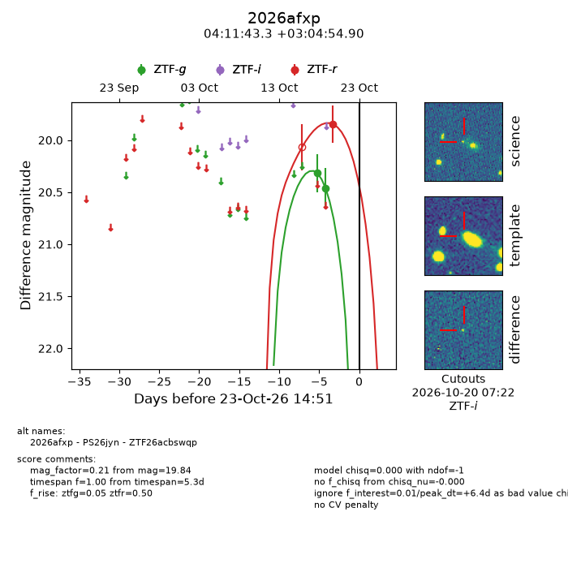
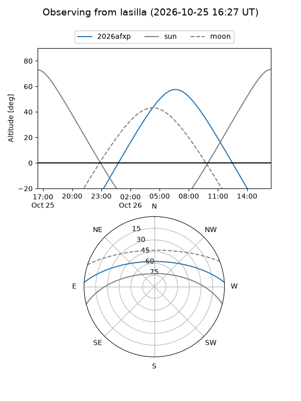
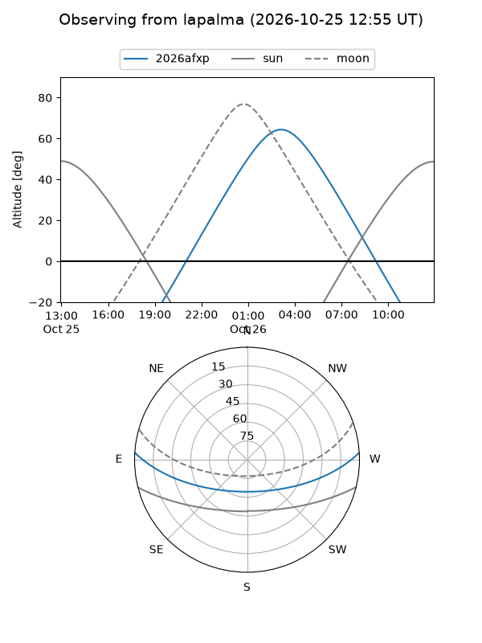
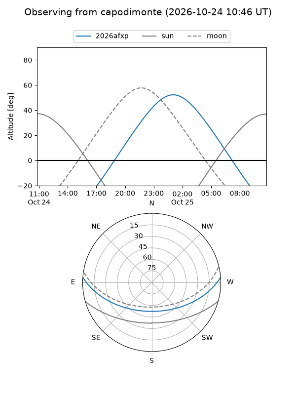
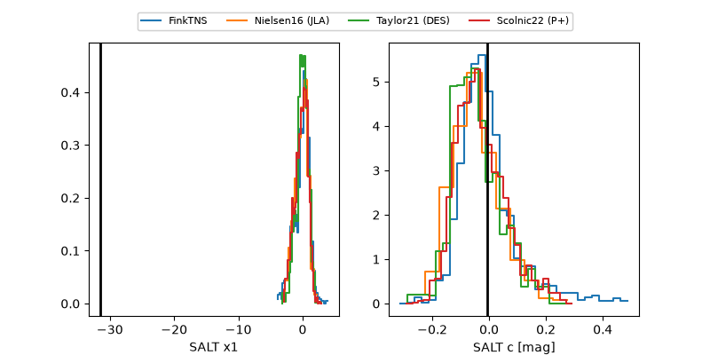

2026afxp
Target 2026afxp at 2026-10-23 14:54
Aliases and brokers:
FINK-ZTF: ztf.fink-portal.org/ZTF26acbswqp
Lasair-ZTF: lasair-ztf.lsst.ac.uk/objects/ZTF26acbswqp
ALeRCE-ZTF: alerce.online/object/ZTF26acbswqp
YSE-PZ: ziggy.ucolick.org/yse/transient_detail/2026afxp
TNS name: wis-tns.org/object/2026afxp
Direct TNS query: direct search
alt names
ZTF26acbswqp (ztf,fink_ztf)
2026afxp (tns,yse)
PS26jyn (panstarrs)
Coordinates:
equatorial (ra, dec) = 62.9305,+3.08192
equatorial (HMS+DMS) = 04:11:43.31,+03:04:54.90
galactic (l, b) = (188.9839,-33.08528)
Flags:
peak dt: +6.4
Photometry:
last ztfg=20.46, ztfr=19.84
2 ztfg, 1 ztfr detections
Lightcurve

Visibility



Additional plots
